Arena ID
Arena in ITCM
Arenas in Main Memory, Expanded Main Memory, DTCM and Shared Regions
NITRO mode
TWL mode
Starting Address of Main Memory Arena
Arenas in Work RAM
NITRO mode
TWL mode
Managing Arenas and Allocating Memory
The TWL-SDK allows you to define nine different arena regions: main memory (one for ARM9 and one for ARM7), extended main memory, ITCM, DTCM, a shared memory user portion, shared work RAM (one for ARM9 and one for ARM7), and an ARM7-dedicated work RAM. Each region as assigned an ID that is an OSArenaId enumerated type value.
| ArenaID | Purpose of arena |
|---|---|
| OS_ARENA_MAIN | Arena in main memory for ARM9 |
| OS_ARENA_MAIN_SUBPRIV | Arena in main memory for ARM7 |
| OS_ARENA_MAINEX | Expanded arena in main memory |
| OS_ARENA_ITCM | Arena in ICTM |
| OS_ARENA_DTCM | Arena in DTCM |
| OS_ARENA_SHARED | User information arena in shared memory |
| OS_ARENA_WRAM_MAIN | Arena for ARM9 in shared work RAM |
| OS_ARENA_WRAM_SUB | Arena for ARM7 in shared work RAM |
| OS_ARENA_WRAM_SUBPRIV | Arena in ARM7 work RAM |
These arenas are initialized by OS_InitArena(), and some are initialized by OS_InitArenaEx(). ARM7 configures arena regions in the following locations: main memory, shared work RAM, and ARM7 work RAM. The rest of the arenas are configured by ARM9.
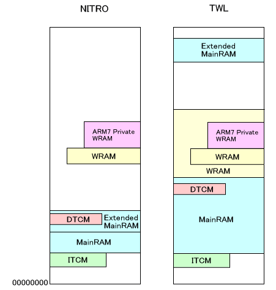
This area is the same for NITRO mode and TWL mode.
ITCM is located in a 32KB block in the lower portion of main memory (0x01FF8000 - 0x01FFFFFF). The lowermost portion of this area stores the SDK's program code, such as interrupt handlers. If the user specifies the overlay module, it is placed next. By taking into consideration the maximum address used by the overlay, the portion that follows determines the ITCM arena. If there is no overlay, the ITCM arena begins atSDK_AUTOLOAD_ITCM_BSS_END.
The starting address of this ITCM arena is determined automatically in thelcffile asSDK_SECTION_ARENA_ITCM_START.
Examples of code placed in ITCM include interrupt handlers and some of the DMA functions. This part is transferred to ITCM by theautoloadfeature beforeTwlMain()starts. You can also specify what code to transfer.
This section describes the arenas in main memory, expanded memory, DTCM, and shared regions. These areas have significant differences between NITRO mode and TWL mode.
The following explanation applies to both NITRO ROM and TWL HYBRID ROM operating in NITRO mode. As you read this section, be sure to note the difference between the two starting addresses for ARM9 program placement.
If the main memory size set with theOS_EnableMainExArenafunction is 8MB, then the main memory extended arena can be used. But if the main memory size was set to 4MB with theOS_DisableMainExArenafunction or the application is running on an actual console, the main memory extended arena cannot be used. (Functions that declare whether the extended arena in main memory is used must be called before theOS_InitorOS_InitArenafunction.)
The following two figures show examples of when the main memory size is set to 8MB and 4MB, respectively. Symbols that start withSDK_are defined automatically in the.lcffile. Symbols that start withHW_are constants.
The data region used for the interrupt process is allocated in the lower address of DTCM. The user can also allocate this region by adding a specification to do so. However, no program code can be placed in DTCM. Like ITCM, the area used by the overlay module is taken into consideration to determine the DTCM arena starting addressSDK_SECTION_ARENA_DTCM_START. When there is no overlay, this has the same value asSDK_AUTOLOAD_DTCM_BSS_END.
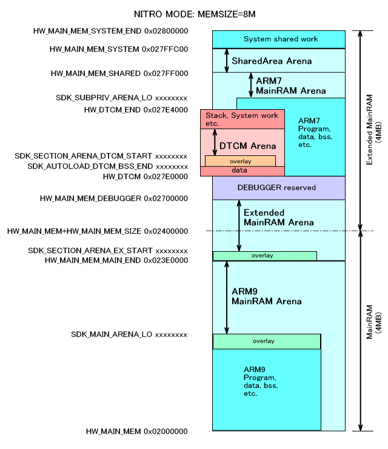
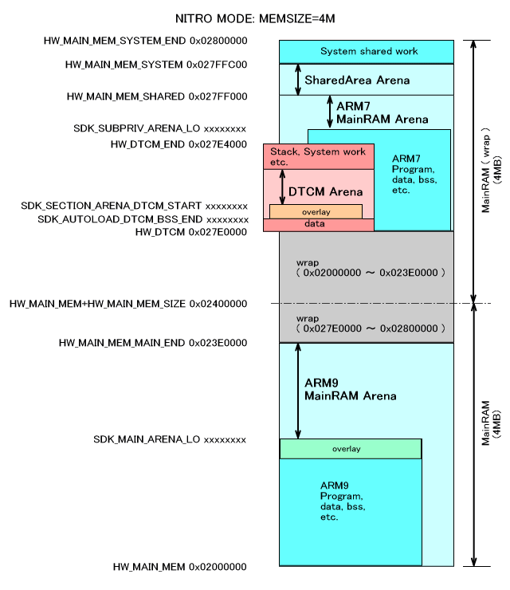
The two previous figures (NITRO MODE:MEMSIZE=8M and NITRO MODE:MEMSIZE=4M) both refer to NITRO ROMs operating in NITRO mode. In the case of TWL HYBRID ROM operating in NITRO mode, program placement for ARM9 starts at 0x02004000, not at 0x02000000. The following figure shows the correct placement.
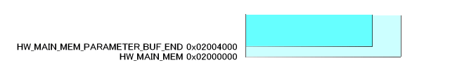
The following explanation applies to both TWL HYBRID ROM and TWL LIMITED ROM operating in TWL mode.
If the main memory size set with theOS_EnableMainExArenafunction is 32 MB, then the main memory extended arena can be used. But if the main memory size was set to 16 MB with theOS_DisableMainExArenafunction or the application is running on an actual console, the main memory extended arena cannot be used. (Functions that declare whether the extended arena in main memory is used must be called before theOS_InitorOS_InitArenafunction.)
The following two figures show examples of when the main memory size is set to 32 MB and 16 MB, respectively. Symbols that start withSDK_are defined automatically in the.lcffile. Symbols that start withHW_are constants.
The data region used for the interrupt process is allocated in the lower address of DTCM. The user can also allocate this region by adding a specification to do so. However, no program code can be placed in DTCM. Like ITCM, the area used by the overlay module is taken into consideration to determine the DTCM arena starting addressSDK_SECTION_ARENA_DTCM_START. When there is no overlay, this has the same value asSDK_AUTOLOAD_DTCM_BSS_END.
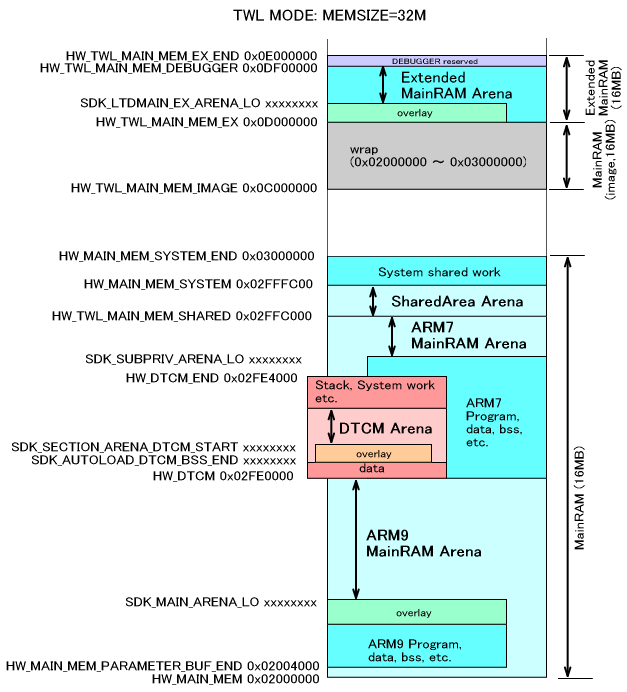
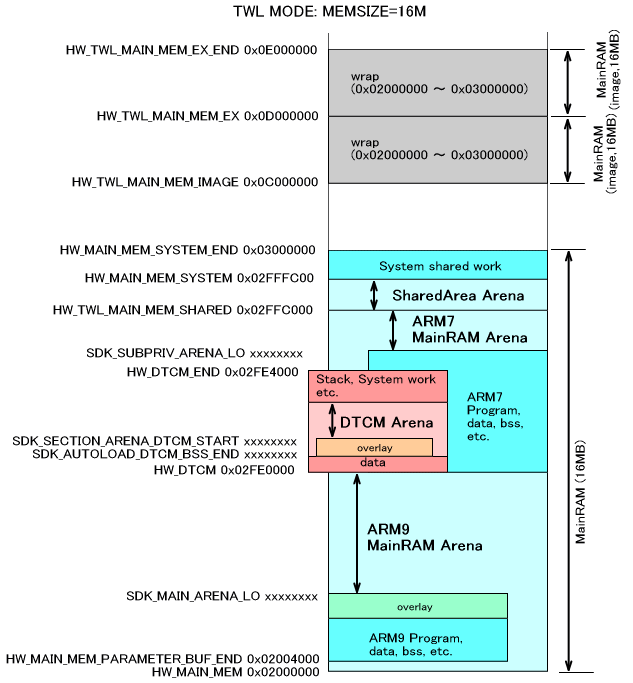
The starting address for the main memory arena,SDK_MAIN_ARENA_LO, is placed in the position farthest back behind the static part of main memory, the program loaded byoverlay, and theoverlayportion of the BSS region. These considerations are the same as those for the overlays in ITCM, DTCM, and extended main memory.
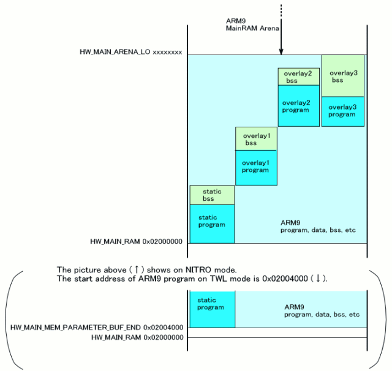
For NITRO, there are two arenas of work RAM: ARM7-dedicated WRAM (64 KB) and ARM9/ARM7 shared WRAM (32 KB; WRAM-0/1). On NITRO, the standard practice is to allocate all work RAM to the ARM7, so it is assumed that these arenas will also be used by the ARM7. Also, each of these arenas is laid out as a contiguous region, but they will store the ARM7 program, and the usable heap will be determined by the size of the program.
First, let's consider the case where the ARM7 program is 32 KB or greater in size, and WRAM-0/1 are completely used. In this case, the ARM7-dedicated WRAM arena (arena IDOS_ARENA_WRAM_SUBPRIV) will be the region starting from the upper limit of program use and ending at the ARM7-dedicated WRAM's system region or stack. There will be no ARM7 WRAM arena (that is, arena IDOS_ARENA_WRAM_SUB). There will be no ARM9 WRAM arena (arena IDOS_ARENA_WRAM_MAIN) either, because there is no WRAM on the ARM9.
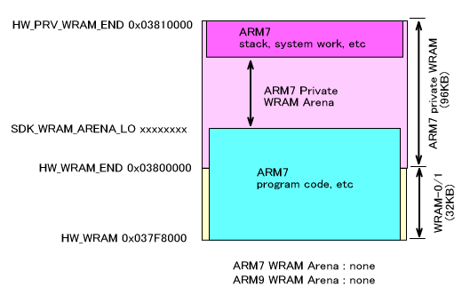
On the other hand, if the ARM7 program is less than 32 KB and fits within WRAM-0/1, an ARM7-dedicated WRAM arena can be created as shown in the figure below. There won't be an ARM9 WRAM arena in this case either.
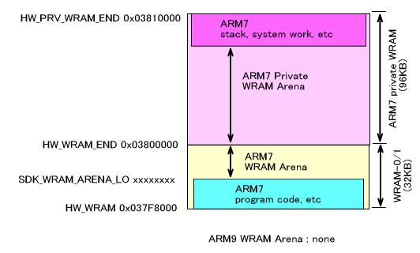
In TWL mode, there is more WRAM available than there is in NITRO mode. There is 256 KB of ARM9/ARM7 shared WRAM (WRAM-A), as well as two 256 KB areas of ARM9/ARM7/DSP shared WRAM (WRAM-B and WRAM-C). However, WRAM-A is always used by the ARM7 with the TWL-SDK.
There are slight differences between TWL/NITRO hybrid ROMs and TWL-exclusive ROMs with regard to where WRAM is positioned. Specifically, with hybrid ROMs, WRAM-0/1 and the ARM7-dedicated WRAM will be positioned adjacently, just like NITRO. With TWL-exclusive ROMs, on the other hand, WRAM-A and the ARM7-dedicated WRAM will be positioned adjacently. For details, see MI Overview (Work RAM).
There are also multiple heap configurations that are independent of the arena configurations. For details, see "Memory Allocation" in the OS Overview.
Here, we describe the case of TWL-exclusive ROMs (the case when WRAM-A and the ARM7-dedicated WRAM are adjacent). In this regard, TWL/NITRO hybrid ROMs are the same as NITRO mode, so for those refer to the "For NITRO Mode:" section above.
The case illustrated below assumes that the ARM7 program is 256 KB or larger, and that WRAM-A is completely used. In this case, the ARM7-dedicated WRAM arena will be created as shown in the figure below. An ARM7 WRAM arena cannot be created. There will be no ARM9 WRAM arena either.
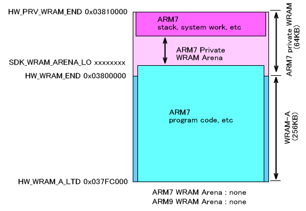
If the ARM7 program is less than 256KB, and fits within WRAM-A, an ARM7-dedicated WRAM arena can be created in WRAM-A as shown in the figure below. There won't be an ARM9 WRAM arena in this case either.
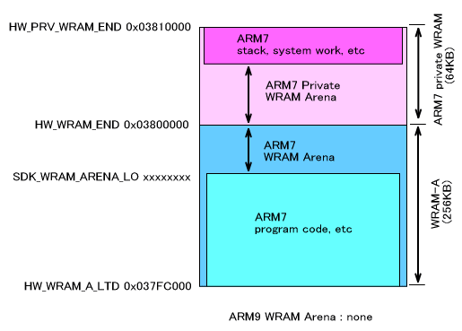
The Arena region depends on the pointers that indicate the start and the end of the region.
The system stores only these two pointers and information regarding whether the arena has been initialized. In other words, there is no information regarding the extent to which the arena is used, the initial locations of the pointers, or the content of the arena.
For each arena, there are pointers for the start and end of the arena region and the information about initialization. This data is collected together and placed in a system-shared region.
When memory blocks are secured from an arena, they can be secured from either the start or the end of the region. Accordingly, the memory region boundary moves on its own. For example, to allocate a block ofsize1bytes from the start of the region (the low end), after callingOS_GetArenaLo(), you must callOS_SetArenaLo()to set the returned value as the boundary.
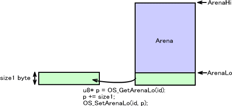
In the following figure, a block ofsize2bytes is allocated from the tail end of the arena (that is, from the high-order end). In this case as well, you must set the boundary for the arena region usingOS_SetArenaHi().
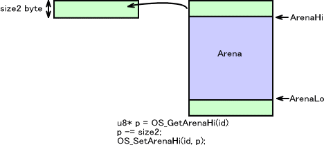
This series of tasks can be performed automatically by the two functionsOS_AllocFromArenaLo()andOS_AllocFromArenaHi(), which allocate memory from the start (low end) or the tail end (high end) of the memory region. We recommend that you use these functions for the arena.
Arenas are not suitable for frequently securing and releasing memory during the game. They are most often used for general assignments like securing lump regions for various purposes at the time of initialization. The OS has a memory allocation system for repeatedly allocating and releasing memory during the game usingOS_AllocFromHeap(). Refer to OS Overview - "Memory Allocation" for details.
OS Function List (Arena)
OS Function List (Alloc)
2008/12/02 Adjusted the ARM9 program starting address for TWL HYBRID/LIMITED ROM.
2006/03/16 Revised figure depicting arena management and securing memory and added a description.
2005/08/27 Made revisions in line with ITCM, DTCM, and extended main memory arena overlay support.
2005/07/28 Corrected mistakes.
2005/04/15 Changed the locations of main memory and the arena in DTCM.
2004/12/13 Revised terminology and word endings.
2004/10/25 Initial version. Split off from OS_InitArena()
CONFIDENTIAL